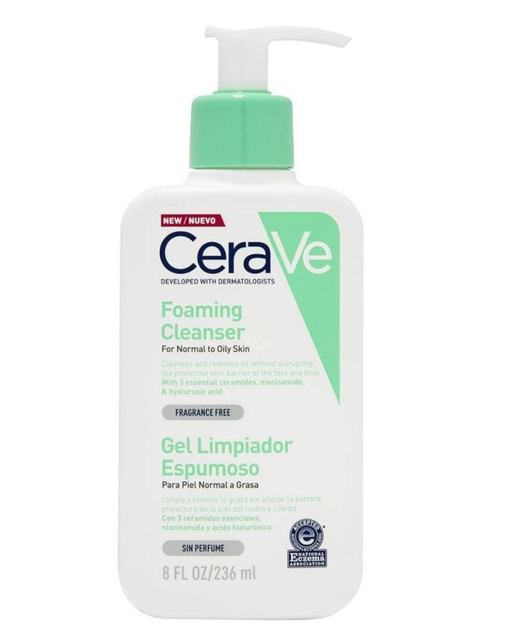

THE ORDINARY NATURAL MOISTURIZING FACTORS + BETA-GLUCAN
Revitalift Filler Serum De Ojos | 20MLL'Oréal Paris Protector Solar Diario FPS50+ UV Defender Fluido Invisible, 40ml
Natural Moisturizing Factors + Beta-Glucan de The Ordinary

THE ORDINARY NATURAL MOISTURIZING FACTORS + BETA-GLUCAN
Es un gel hidratante ligero formulado para proporcionar hidratación superficial y duradera. Este producto está diseñado para fortalecer la barrera de la piel y mejorar su capacidad de retención de humedad. Gracias a su textura no grasa, es ideal para todo tipo de piel, incluida la piel sensible, y es 100% puro y libre de fragancias.
Te sugiero verificar la lista de ingredientes específica en el empaque del producto, ya que puede variar en diferentes regiones.
Beneficios
*Adecuado para todo tipo de piel
*Propiedades calmantes y antiinflamatorias
*Libre de fragancias
*Hidrata
*Revitaliza
¿Cómo aplicarlo?
" 1 "

Limpieza:
Limpiar el rostro antes de la aplicación para asegurar que la piel esté libre de impurezas.
" 2 "

Aplicación:
Aplicar una pequeña cantidad de gel en el rostro y el cuello.
" 3 "

Masajear:
Masajear suavemente con movimientos ascendentes hasta que se absorba por completo.
Sérum de Ojos Revitalift Ácido Hialurónico de L'Oréal Paris

El Natural Moisturizing Factors + Beta-Glucan está diseñado para hidratar la piel, fortalecer su barrera natural y calmar irritaciones. Es ideal para quienes necesitan una hidratación ligera pero efectiva, que además promueva una piel más saludable y resistente a factores externos.
Textura ligera y de rápida absorción: Ideal para quienes buscan hidratación sin sensación grasosa.
Beauty Tips
Adecuado para todo tipo de piel, incluida la sensible y propensa al acné.
Ingredientes
Aminoácidos: Proporcionan hidratación y ayudan a fortalecer la barrera de la piel.
Glicerina y ácido hialurónico: Ayudan a atraer y retener la humedad en la piel.
Fosfolípidos: Mejoran la textura de la piel y aumentan su capacidad de retención de humedad.
Beta-glucano: Tiene propiedades calmantes y antiinflamatorias, además de ser un excelente hidratante.